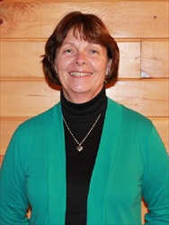

The Pastor
The Rev. Dr. Stephen (Steve) Hastings started here on August 1 as our Interim Minister and became our Designated Term Pastor on April 1, 2019 for the next five years. He and his wife, Jill, will be moving into the parsonage full time. In Maine, Steve has served churches in Winthrop, Kennebunk, Leeds, and Hartford. He has also been very active in the Maine Conference over the years, most recently as Clerk of the Board and convener of the Earth Care and Spirituality Resource Team.
Steve has a PhD in environmental ethics and spirituality, an interest that had a lot to do with his decision to enter the ministry almost 30 years ago. He hopes to share some of that with us during his time here.
Ministers of Music
Julie Knowlton is our Choir Director and Jayne Sharrow is our Organist. The choir rehearses every Sunday at 8:30 am before Church, and then again at 10:45 am after Church. Interested? Please join us! All are welcome.
Administrative Assistant

Chris Paydos, a native of Gilbertville, Massachusetts, has made Dover-Foxcroft her home for the past 30 years. A graduate of the University of Massachusetts with a BA in English, she worked several years in the insurance industry before becoming the Risk Manager/Benefits Supervisor at Guilford of Maine, Guilford ME. She did consulting work and substitute teaching while her children were younger. In 1997, Chris was elected as our Church Treasurer, a position she continues to hold. In 1999, she became our Christian Education Director, a position she held until 2001 when she became the Administrative Assistant of our church. Over the years, Chris has held many officer positions for various community organizations, including Mocutoc Club, PTO, Morton School Organization, Foxcroft Academy Sports Boosters, and the Penobscot-Piscataquis Association of the Maine Conference UCC. She and her husband, Paul, have two children: Kayla, a 2011 graduate of the University of New Hampshire and Connor a junior at the University of New Hampshire. She enjoys traveling with her family, reading and walking. Chris and her family joined our church family in 1991 after being invited to worship by a close friend.
Sunday School & Youth Group Coordinator(s)
Amy Fagan-Cannon is our Sunday School Coordinator. On most Sundays, the children start off in Church at 9:30 am and then go out for Sunday School after the Children's Message. Deb Boyd is leading a senior high youth group, and plans are underway for a middle school youth group. For more information about programs please contact the church office at 564-2872.
Nursery Attendant
Stacy Shaffer is the newsest member of our staff but brings with her a wealth of experience working with children including those with special needs. Stacy is First Aid and CPR certified with degrees in both psychology and education. She works with a volunteer each week to makes sure the youngest members of our family are safe and cared for. Nursery care is offered during time of public worship.